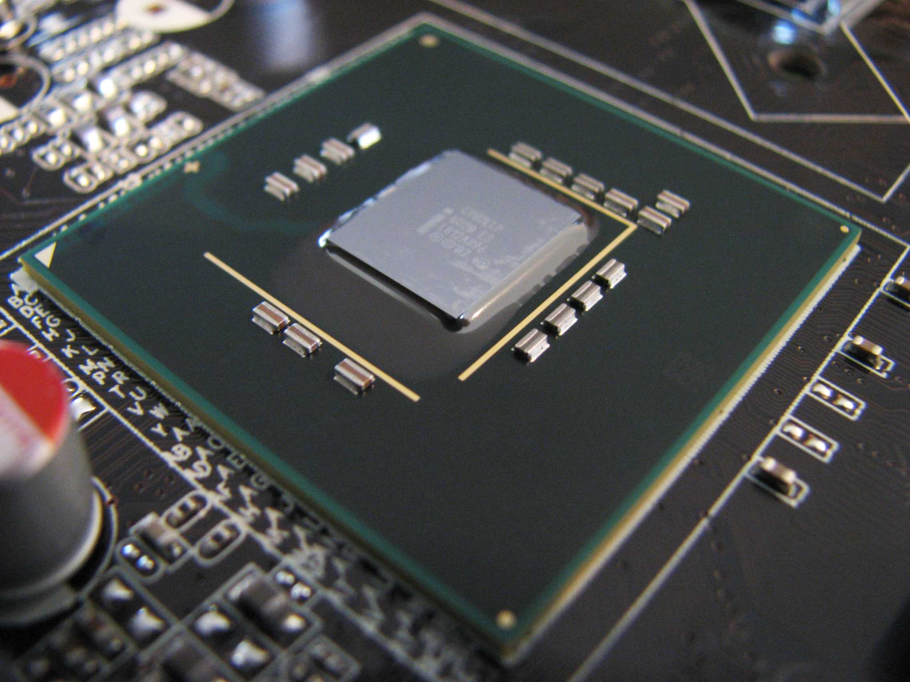

Как устроен ПК?
Я думаю, что многие не разбираются в работе процессора или твердотельных накопителей, так что, надеюсь, мой труд не пройдет зря.
Процессор
Начнем с мозга нашего компьютера - процессора. Его основное назначение — арифметические и логические операции.
Хранение информации
Процессор выполняет поступающие на него команды. Команды в большинстве случаев работают с данными, которые могут быть промежуточными, входными или выходными. Все эти данные вместе с инструкциями сохраняются в регистрах и памяти.
Тактирование процессора
Быстродействие компьютера определяется тактовой частотой его процессора. Тактовая частота — количество тактов (соответственно и исполняемых команд) за секунду. Частота нынешних процессоров измеряется в ГГц (Гигагерцы). 1 ГГц = 10⁹ Гц — миллиард операций в секунду. Чтобы уменьшить время выполнения программы, нужно либо оптимизировать (уменьшить) её, либо увеличить тактовую частоту. У части процессоров есть возможность увеличить частоту (разогнать процессор), однако такие действия физически влияют на процессор и нередко вызывают перегрев и выход из строя.
Поток инструкций
Современные процессоры могут параллельно обрабатывать несколько команд. Пока одна инструкция находится в стадии декодирования, процессор может успеть получить другую инструкцию. Однако такое решение подходит только для тех инструкций, которые не зависят друг от друга. Если процессор многоядерный, это означает, что фактически в нём находятся несколько отдельных процессоров с некоторыми общими ресурсами, например кэшем.
Вот одни из самых популярных процессоров на данный момент:

Intel Core i5 12400

AMD Ryzen 5 5600X
Intel Core i5 12400
AMD Ryzen 5 5600X
Материнская плата
Материнская плата - кровеносная система компьютера. Она соединяет все комплектующие в единую систему.
Разновидности и основные функции материнской платы
Oсновных задач у системной платы две:
- Обеспечение электропитанием установленных компонентов.
- Обеспечение связи между компонентами ПК для их успешного функционирования и взаимодействия.
Форм-факторы материнских плат
Материнские платы различаются по размеру в зависимости от разнообразия задач, которые требуется выполнять, и соответствующего набора и номенклатуры компонентов, которые могут/должны быть использованы. Обычно говорят, что они имеют такой-то форм-фактор. Наиболее распространенными являются:
- Mini-ITX – размер 170х170 мм.
- MicroATX (mATX, uATX, µATX) – размер 244×244 мм.
- ATX (Advanced Technology Extented) – размер 305х244 мм.
- E‑ATX (Extented) – увеличенный вариант «просто» ATX размером 305х330 мм.
Есть и другие форм-факторы, например, Mini-STX, серверные платы и т. п.. Это специфические продукты, и в домашнем или офисном компьютере используются редко.
Некоторые важные устройства на материнский плате
Если кратко, то:
Процессорный сокет - разъем, используемый для установки процессора в материнскую плату.

Слоты памяти - слоты, в которые устанавливается оперативная память.

Чипсет - набор системной логики.
PCI разъемы - разъемы для видеокарт и не только.

Разъемы M.2 - разъемы для соответствующих накопителей.

Разъемы для накопителей - разъемы для HDD и SATA SSD.

Видеокарта
Дискретная видеокарта — неотъемлемая часть любого компьютера, который используется для игр или профессиональной работы с графикой и видео. Это достаточно сложное устройство, состоящее из нескольких компонентов. Видеокарты бывают также и встроенные, но для игр они не подходят.
Компоненты видеокарты
Графический процессор
«Сердце» видеокарты, занимающееся вычислениями. Графический процессор может использоваться не только в игровой или профессиональной графике. Современным ГП уже давно под силу и разнообразные общие вычисления, если их поддержка имеется в используемой программе.

Плата видеокарты
Плата видеокарты выполняет ту же роль, что и материнская плата для центрального процессора. Дорожки на плате соединяют графический процессор с видеопамятью и различными разъемами. К тому же, именно на плате распаиваются электронные компоненты подсистемы питания ГП и видеопамяти.

Видеопамять
Собственная оперативная память видеочипа. Графические процессоры, в отличие от центральных, имеют более широкую шину доступа к памяти — до 384 бит в современных игровых моделях. Большинством ГП, за исключением самых бюджетных, используется память различных поколений GDDR. Она отличается более высокими эффективными частотами, чем обычная память типа DDR. Поэтому графическая память видеокарты работает намного быстрее, чем оперативная память компьютера.

Подсистема питания
Подсистема питания графического процессора и видеопамяти. Представляет собой преобразователь напряжения (VRM), на который подается линия +12 В от блока питания. VRM формирует напряжения питания для ГП и видеопамяти. Они гораздо более низкие — порядка 1-1.5 В.

Разъемы для подачи питания на видеокарту. У некоторых бюджетных моделей могут отсутствовать, так как они получают питание от слота PCI-E на материнской плате – максимум до 75 Вт. Более мощные решения вдобавок к этому могут обладать одним или несколькими разъемами:
- 6-pin— первая версия разъема для видеокарт с интерфейсом PCI-E. Может передавать до 75 Вт мощности.
- PCI-E 8-pin — вторая версия разъема для видеокарт с интерфейсом PCI-E. Может передавать до 150 Вт мощности.
- 12VHPWR — современный вид разъема, устанавливаемый на топовые видеокарты NVIDIA. Может передавать до 600 Вт мощности.
Разъем шины PCI-E
Разъем для подключения видеокарты к слоту PCI-E x16 на материнской плате. Выглядит у всех видеокарт одинаково. Однако в зависимости от модели карты к нему может быть подведено разное количество линий шины PCI-E — от 4 до 16.

Разъемы для вывода изображения
Разъемы для подключения устройств отображения информации — мониторов, телевизоров или проекторов.
- HDMI — универсальный и наиболее распространенный порт для всех видов устройств отображения. На современных моделях видеокарт обычно один HDMI, но иногда можно встретить и пару.
- DisplayPort — второй по популярности порт. Используется в основном для подключения мониторов, в телевизорах и проекторах встречается реже.
- DVI — устаревший цифровой порт, который все еще имеется в ряде видеокарт и некоторых моделях мониторов.
- VGA — аналоговый порт для мониторов и проекторов, которого уже не встретить в современных игровых моделях. Однако в ряде бюджетных видеокарт его до сих пор можно найти, как и в недорогих мониторах.


Система охлаждения
Плата видеокарты со всеми установленными на нее компонентами обладает собственной системой охлаждения.
Чаще всего эта система представляет собой радиатор, на котором установлены вентиляторы для обдува и декоративный кожух. Тепло с графического процессора на радиатор передается посредством слоя термопасты между ними. Для передачи тепла с видеопамяти и компонентов подсистемы питания применяются термопрокладки.
Для более эффективного охлаждения в среднебюджетных и топовых моделях карт тепло по радиатору «разносят» тепловые трубки. С той же целью в основание радиатора может устанавливаться испарительная камера.

Среди бюджетных моделей встречаются карты с пассивным охлаждением — у них есть радиатор, но нет вентиляторов. Топовые модели, напротив, могут обладать системой жидкостного охлаждения. В ее основе тоже лежит радиатор и вентиляторы, но они вынесены за пределы корпуса видеокарты с помощью шлангов водоблока. Водоблок, в свою очередь, устанавливается на плату видеокарты вместо радиатора.

Питание компонентов воздушной или жидкостной системы охлаждения подключено к плате видеокарты. Оттуда ей управляет специальный микроконтроллер, который получает данные о температуре от графического чипа, памяти и прочих компонентов, находящихся на плате.
Оперативная Память (ОЗУ)
Оперативная память является неотъемлемым компонентом любой вычислительной системы.
Что такое оперативная память?
Любая вычислительная система состоит из нескольких компонентов. При этом неважно, где эта система используется — в компьютере, ноутбуке, смартфоне, планшете или даже смарт-часах. Основной принцип работы везде один: данные считываются с медленного накопителя и попадают в более быструю оперативную память. Оттуда их получает очень быстрая кеш-память центрального процессора, которая передает данные на вычислительную часть ЦП.

Оперативная память (ОЗУ) — это связующее звено между накопителем и кеш-памятью процессора. Последнюю четверть века вся оперативная память относится к типу DRAM (Dynamic Random Access Memory). Это динамическая память с произвольным доступом. Она может обращаться к любой ячейке данных с запросом чтения или записи за одинаковое количество времени.
Физически ОЗУ представляет собой одну или несколько микросхем. В смартфонах и планшетах микросхемы могут быть как распаяны на плате, так и интегрированы прямо в систему на чипе (SoC). Для этих устройств установленный объем памяти не подлежит увеличению.
В компьютерах с этим проще: память для них распространяется в виде модулей формата DIMM, на которых распаяны микросхемы памяти. В ноутбуках можно встретить как более компактные модули SO-DIMM, так и распаянную ОЗУ.

Устройство чипов памяти
Внутри микросхем памяти находится несколько слоев, соединенных друг с другом. Каждый из них разделен на кластеры, в которых находятся ячейки памяти, хранящие информацию.

Ячейка памяти состоит из конденсатора и полевого транзистора. Конденсатор может хранить электрический заряд (логическая единица) или находиться в состоянии без заряда (логический ноль). Таким образом каждая ячейка хранит один бит информации.
Транзистор выступает в роли своеобразной двери. Когда «дверь» закрыта, она удерживает заряд конденсатора. При считывании и записи информации эта «дверь» открывается. Помимо конденсатора, транзистор подключен к двум линиям — линии слов («Word Line», строка) и линии битов («Bit Line», столбец).

Ячейки памяти расположены подобно клеткам шахматной доски. Те, которые находятся на одной линии слов, образуют страницу памяти. Операции чтения и записи производятся не с одной ячейкой, а с целой страницей памяти сразу, так как все транзисторы ячеек на одной линии слов открываются одновременно.
Для операции чтения на одну линию слов подается управляющее напряжение, которое открывает все транзисторы ячеек на ней. На концах линий битов находятся усилители чувствительности (Sense Amplifier). Они распознают наличие или отсутствие заряда в конденсаторах ячеек памяти, таким образом считывая логическую единицу или логический ноль.

Конденсаторы ячеек имеют маленькие размеры и очень быстро теряют заряд. Поэтому независимо от того, нужно ли сохранять в памяти текущую информацию или записать новую, ячейки периодически перезаписываются.
Для этого, как и при чтении, управляющее напряжение подается на «двери» транзисторов ячеек по линии слов. А вот по линии битов вместо считывания производится процесс записи. Он осуществляется с помощью подачи напряжения для заряда конденсаторов нужных ячеек — то есть только тех, где должна быть логическая единица.

Передача данных и тайминги
Работа линий координируется декодером адресов строк и мультиплексором столбцов. Информация для записи в ОЗУ поступает в общий буфер данных. Оттуда она попадает в мультиплексор и в его собственный буфер, а затем — в управляющую логику, которая координирует работу ячеек памяти с учетом латентности памяти.
Данные из логики поступают в буфер декодера адресов строк, а оттуда и на сам декодер, позволяя своевременно открывать страницы памяти для операций чтения и записи. При чтении данные вновь проходят через мультиплексор и общий буфер данных, который передает их системе.

Операции декодера адреса строки и мультиплексора столбцов требуют определенных периодов времени — стробов. Строб адресов строк обозначается как RAS, адресов столбцов — как CAS. Данными характеристиками и их соотношениями определяется латентность памяти, или тайминги. Тайминги — это временные задержки между выполнением команд чтения и записи. Чем они ниже, тем быстрее работает память при прочих равных.
Тайминги выражаются не в абсолютном, а в относительном числовом значении. Оно показывает количество тактовых циклов, которое требуется памяти на выполнение операций. Или, если простым языком, во сколько раз медленнее производится та или иная операция относительно задержки передачи данных. Именно поэтому одни и те же модули ОЗУ имеют разные тайминги на разных частотах.
Для простого примера возьмем распространенную ОЗУ DDR4 с частотой 3200 МГц. Время передачи одного бита информации у нее составляет 1/3 200 000 долю секунды, или 0.3125 нс. Так как память типа DDR передает данные дважды за такт, длительность одного цикла передачи данных занимает в два раза больше времени — 0.625 нс. При тайминге, равном 16, определенная операция будет происходить за время, которое в 16 раз больше этого значения: 0.625 x 16 = 10 нс.
Основные виды таймингов — это:

-
СL (CAS Latency)
Количество тактов между получением команды чтения/записи и ее выполнением.
-
tRCD (RAS to CAS delay)
Количество тактов между открытием строки и началом выполнения операции чтения/записи по столбцу.
-
tRP (RAS Precharge Time)
Количество тактов между получением команды закрытия одной строки и открытием следующей.
-
tRAS (RAS Active Time)
Количество тактов, в течение которых строка памяти может быть доступна для чтения/записи.
-
CMD (Command Rate)
Количество тактов с момента активации чипа памяти до готовности принять команду.
Хранилища данных
Твердотельные накопители
SSD-накопители стали логичным продолжением эволюции устройств для хранения информации. Новые требования к производительности не могли не сказаться на техническом устройстве SSD-накопителей. Их внутреннее наполнение кардинально изменилось по сравнению с привычным жестким диском.

Корпус

Корпус устройства — неотъемлемая часть накопителя, которая призвана защитить хрупкие внутренние детали. В зависимости от используемого форм-фактора накопителя его внешняя оболочка может кардинально различаться. Так устройства форм-фактора M.2 могут иметь в своем арсенале лишь бумажную или металлизированную наклейку, нанесенную поверх компонентов, или же цельный металлический радиатор как и модели с физическим интерфейсом PCI-E. Основной упор в этом случае возлагается на снижение температуры SSD, а его физическая защита уходит на второй план.

Что касается накопителей форм-фактора 2.5, ситуация диаметрально противоположная. В основном, они поставляются в стандартных пластиковых кейсах, которые защищают внутренности накопителя при неаккуратном обращении. И даже падение устройства не станет для него фатальным в отличие от тех же жестких дисков. Устройствам с интерфейсом SATA свойственен невысокий нагрев, поэтому производители зачастую пренебрегают добавлением каких-либо термопрокладок. Единственным теплоотводом служит непосредственно корпус.
У пользователя, впервые увидевшего разобранный SSD 2.5, может возникнуть резонный вопрос: для чего такой большой корпус, если SSD такой мальенький? Виной тому унификация устройства. Этот формат позволяет устанавливать SSD-накопители в старые ноутбуки или системные блоки, в посадочные места, предназначенные для жестких дисков форм-фактора 2.5. Это позволяет пользователю модернизировать свой ПК минимальными средствами. Также производители получают некоторый «карт-бланш» для размещения внутренних компонентов SSD, так как остается запас пространства для увеличения печатной платы. Различие между разными моделями SSD кроме внутренних компонентов сводится к наклейке, нанесенной на корпус. Она содержит в себе техническую информацию и служит гарантийной пломбой.
Снятие наклейки лишает возможности гарантийного обслуживания.
Интерфейс подключения

HOST Interface — часть накопителя, отвечающая за подключение устройства к системе. SSD-накопители форм-фактора 2.5 имеют стандартные разъемы, свойственные жестким дискам. Для подключения используются два привычных SATA-разъема. Это семиконтактный разъем для подключения шины данных и пятнадцатиконтактный — для подключения питания. Передача данных осуществляется от контроллера к системе и обратно путем использования двух каналов передачи данных. Этот тип подключения имеет ограничение пропускной способности в 6 Гбит/с. Преимущество разъемов SATA — обратная совместимость SATA III и SATA II. Это позволяет подключить современный накопитель к плате, которой уже немало лет.

Для подключения SSD-накопителей форм-фактора M.2 используется современный интерфейс, разработанный как компактная альтернатива SATA-разъему. Все необходимое питание для работы устройства обеспечивается материнской платой. Данный интерфейс имеет в своем распоряжении 75 позиций контактов. В зависимости от конкретной модели часть этих позиций удалена слева, справа или с обеих сторон, образуя соответствующие разрезы. Эти разрезы обозначают ключ, используемый в накопителе: B, M или B&M. Накопители форм-фактора M.2 могут подключаться посредством интерфейса SATA или PCI-Express.
Печатная плата

Печатная плата — базовая основа, на которой располагаются элементы внутренней начинки накопителя. Она представляет собой пластину из диэлектрика с электропроводящими цепями электронной схемы. Компоненты на плате соединены посредством проводящего рисунка и пайки. Размер печатной платы может варьироваться в зависимости от конкретной модели и исполнения. В свою очередь размещение микросхем может быть произведено как лишь на одной стороне платы, так и с обеих сторон.
Контроллер памяти

NAND-controller — «сердце» SSD-накопителя, от которого напрямую зависит производительность устройства. Этот чип — связующее звено между флэш-памятью и непосредственно системой. С помощью него осуществляется обмен данными, операции чтения и записи, шифрование файлов, исправление ошибок и многое другое. Для работы контроллера с завода в него вшита микропрограмма, для которой периодически выпускаются обновления. Служат они для более стабильной и оптимизированной работы устройства. Зачастую производители намеренно не указывают модель установленного контроллера в устройстве, так как он может меняться в зависимости от ревизии. Пользователю остаются лишь программные методы идентификации используемой начинки или снятие наклейки на свой страх и риск.
Флэш-память

Микросхемы флэш-памяти, как правило, занимают подавляющую часть печатной платы и могут иметь разнообразнейшую компоновку. И это неудивительно, ведь они хранят в себе всю информацию, которую пользователь записывает на SSD-накопитель. Самой массовой вариацией флэш-памяти, используемой в накопителях, является 3D NAND с многослойной структурой ячеек памяти. А от типа памяти NAND напрямую зависит долговечность накопителя и его характеристики. Существуют четыре типа NAND памяти: SLC, MLC, TLC и QLC. Различаются они количеством бит информации, хранящихся в одной ячейке, — соответственно от одного до четырех. И правило «чем больше, тем лучше» здесь не работает. Более высокая плотность информации в ячейке ведет к ухудшенным характеристикам памяти и снижению ресурса накопителя.
DRAM кэш и конденсаторы

DRAM кэш представляет собой отдельную микросхему, которая по функционалу напоминает оперативную память компьютера. Она ускоряет работу накопителя, используя некоторый объем памяти для временного хранения данных. Такой подход позволяет ускорить доступ к файлам и стабилизировать износ памяти. Этот чип отсутствует в большинстве бюджетных решений.
Намного реже встречающийся компонент в бытовых SSD-накопителях — конденсаторы. Они призваны помочь в решении проблемы потери электропитания. Неожиданные отключения питания пагубно влияют на информацию, с которой работает SSD-накопитель, а конденсаторы позволяют уменьшить вероятность повреждения и утери данных. Из-за специфичности данной функции используются они в серверных решениях.
Жесткие диски

Несмотря на повсеместное распространение твердотельных накопителей, магнитные жесткие диски все еще имеются в продаже. Это самый дешевый способ получить свободные гигабайты для своей системы. Как устроен HDD, из каких деталей состоит и как работает — подробности в нашем материале.
Конструкция жесткого диска
В продаже можно встретить HDD двух основных форм-факторов — 3,5’’ и компактные 2,5’’. Есть модели и меньше, но они не так распространены.

Несмотря на различные размеры, принципиальная конструкция у всех жестких дисков одинаковая.

Это набор основных элементов, а вот так выглядит жесткий диск со всеми крепежами и другими мелкими элементами в разборе.

Давайте рассмотрим в подробностях каждый из основных элементов конструкции HDD.
Гермоблок
На самом деле внутри дисков совсем не вакуум, как многие думают. В большинстве моделей внутри циркулирует обычный воздух, так что корпус не обладает полной герметизацией. А вот в дисках большого объема внутреннее пространство может быть заполнено гелием для снижения силы трения — такие накопители действительно герметичны.
Корпус состоит из двух элементов — крышки, на которую обычно наносится этикетка со всеми характеристиками товара, а также основы. На последней закрепляются все остальные элементы конструкции.

Обратите внимание, что у негерметичных дисков имеется «дыхательное отверстие» (breath hole). Оно может располагаться в разных частях корпуса, а также быть защищено небольшим фильтром. Отверстие позволяет выравнивать давление воздуха внутри и снаружи корпуса. Другими словами, поддерживает давление на том же уровне, что и атмосферное.

Корпус обычно выполнен из металла, чаще всего алюминия. Он достаточно легкий, но при этом обеспечивает жесткость всей конструкции во время работы диска.
Плата управления
После снятия крышки корпуса жесткий диск с обеих сторон будет выглядеть приблизительно следующим образом:

На виду находится управляющая плата — она состоит из разъемов для подключения и непосредственно самой микросхемы с различными компонентами. За управление отвечает центральный микроконтроллер — это обычно самый большой чип на плате. Рядом можно найти SDRAM-память — это кэш диска. Для управления двигателем и головками имеется VCM контроллер. Прошивка диска хранится в небольшом чипе с флэш-памятью.

Различия обычно кроются в моделях чипов, объеме кэш-памяти и компоновке всех элементов. Недалеко от VCM-чипа располагаются контакты для управления шпинделем диска, а также шлейф.

Дисковые пластины (Platters)
С обратной стороны накопителя вы можете заметить несколько основных компонентов. Большую часть пространства занимают круглые пластины (platters, «блины»).

Иногда над ними или между стоит сепаратор (damper, separator). Эти элементы используются для выравнивания потоков воздуха и улучшения акустических характеристик.

Сами диски изготавливаются из стекла или отполированного алюминия. Причем полировка настолько качественная, что отклонения по высоте на поверхности в среднем не превышают 30 нм. На пластины наносится ферромагнитный слой из сплава кобальта, хрома и тантала, который и используется для сохранения информации. Применяют гальваническое осаждение или вакуумное напыление. После наносят еще один слой — защитное углеродистое покрытие. Оно предотвращает потерю информации при случайном соприкосновении поверхности пластины с головкой.

Как правило, чем выше объем у диска, тем больше «блинов» предусмотрено в конструкции.
Шпиндель и крепежные элементы
Для вращения дисков используется небольшой электромотор в нижней части. Он в паре с верхним крепежным элементом (Top Cap) удерживает все пластины.

Также в конструкции при наличии нескольких блинов могут присутствовать небольшие разделительные кольца (Spacer Ring). Скорость вращения шпинделя — одна из ключевых характеристик HDD. Чем она выше — тем быстрее осуществляется запись/чтение данных. Типичное значение — 7200 RPM. Для серверных дисков характерны значения в 10К и 15К RPM.

Механизм привода головок отвечает за движение магнитных головок по поверхности диска.

В самом углу стоит пара неодимовых магнитов. Они генерируют постоянное магнитное поле. Последнее взаимодействует c полем катушки (Voice coil), за счет чего возможно движение всего блока на высоких скоростях.

Подвижная часть — блок магнитных головок (Head Stack Assembly, HSA) отвечает на считывание информации с пластин.

В свою очередь HSA состоит из нескольких частей:
- Катушка (Voice Coil) — используется в паре с магнитами для контроля над движениями.
- Подшипник (Bearing) — основание, благодаря которому возможно движение всего блока.
- Коромысло (Arm) — тонкая направляющая из сплава алюминия, на которой крепятся головки.
- Головки (HGA, Head Ginbal Assembly) — еще более тонкая конструкция для установки считывающих элементов.
- Слайдеры (Sliders) — элементы считывания и записи информации, которые «парят» на высоте 5–10 нм отповерхности металлических блинов.

Данные со слайдеров через специальный предусилитель (preamp) и шлейф попадают на управляющую плату жесткого диска.

Для защиты блока головок в HDD может быть предусмотрена зона парковки.

В бездействующем состоянии весь блок уходит в крайнюю сторону, что снижает общий риск повреждения головок. На некоторых дисках пользователи могут отключить или увеличить интервал перехода в эту зону программно.

Таким образом, практически любой жесткий диск состоит из нескольких ключевых узлов — корпуса, управляющей платы, магнитных пластин, вращающего шпинделя, блока считывающих головок и его привода.
Принцип работы жесткого диска
После подачи питания на жесткий диск управляющая плата дает команду на шпиндель, который раскручивает пластины до рабочих оборотов. Блок головок в это время находится либо в парковочной зоне, либо максимально близко к шпинделю, чтобы не повредить данные на диске.
При достижении нужных оборотов создается небольшая воздушная подушка, которая позволяет головкам парить над поверхностью, не задевая при этом сами пластины.

Далее управляющая плата подает сигнал на привод, и блок головок начинает «бегать» по пластинам. Контроллер выбирает нужный трек, а после получает доступ к сектору. У каждого сектора есть зона синхронизации/преамбула (сообщает скорость вращения диска и длину каждого бита данных), адрес сектора, данные и код коррекции ошибок.

Битами информации выступают «домены» — небольшие блоки размером 100×90×125 нм. Это миниатюрные ячейки, которые под воздействием слайдеров могут принимать одну из двух ориентаций.

На слайдерах установлен особый материал, который меняет свое удельное сопротивление в зависимости от силы магнитных полей, проходящих через него. Сильные магнитные поля говорят об изменениях ориентации домена — то есть условный переход с «1» на «0» или наоборот. Слабое поле говорит о последовательности из одинаковых доменов. Чтобы не запутаться в количество повторяющихся доменов как раз используется преамбула и код коррекции ошибок.

Пробегая по доменам на большой скорости, головка считывает биты. Данные поступают в кэш-память для дальнейшей перезаписи или используются в работе системы.
Блок питания

Большинство рассказов про блоки питания начинается с подчеркивания их важнейшей и чуть ли не главенствующей роли в составе компьютера. Это не так. БП — просто один из компонентов системы, без которого она не будет работать. Он обеспечивает преобразование переменного напряжения из сети в необходимые для работы ПК стабилизированные напряжения. Все блоки можно разделить на импульсные и линейные. Современные компьютерные блоки выполнены по импульсной схеме.
Линейные блоки питания
Сетевое напряжение поступает на первичную обмотку трансформатора, а со вторичной мы снимаем уже пониженное до нужных пределов переменное напряжение. Далее оно выпрямляется, следом стоит фильтр (в данном случае нарисован обычный электролитический конденсатор) и схема стабилизации. Схема стабилизации необходима, так как напряжение на вторичной обмотке напрямую зависит от входного напряжения, а оно только по ГОСТу может меняться в пределах ±10 %, а в реальности — и больше.

Основные достоинства линейных блоков питания — простая конструкция и низкий уровень помех. Недостаток таких БП — габариты и невысокий КПД. Собрать БП мощностью 400 и более Вт по такой схеме возможно, но он будет иметь устрашающие размеры, вес и стоимость.
Импульсные блоки питания
Далее в тексте сократим название «импульсный источник питания» до ИИП. Такие блоки питания более сложны, но гораздо более компактны. Для примера на фото ниже показана пара трансформаторов.

Слева — отечественный сетевой с номинальной мощностью 17 Вт, справа — выпаянный из компьютерного БП мощностью 450 Вт. Кстати, отечественный еще и весит раз в 5 больше.
В ИИП сетевое напряжение сначала выпрямляется и сглаживается фильтром, а потом опять преобразуется в переменное, но уже гораздо более высокой частоты (несколько десятков килогерц). А затем оно понижается трансформатором.

Так выглядит плата вживую:

Фильтр
Фильтр в блоке питания двунаправленный: он поглощает разного рода помехи: как созданные самим БП, так и приходящие из сети. В самых бюджетных БП предприимчивые китайцы вместо дросселей распаивали перемычки, а конденсаторы не ставили вообще. Чем это плохо: помехи будут влиять на другую аппаратуру, подключенную к данной сети, а напряжение на выходе получится с «мусором». Сейчас таких блоков уже немного. Встречается также экономия на размерах: фильтр как бы есть, но работать он будет кое-как.
Фильтр работает эффективнее, когда он находится как можно ближе к источнику помех. Поэтому часть фильтра зачастую располагают прямо на сетевой розетке.

На картинке изображен фильтр в минимальной комплектации. F1 — предохранитель, VDR1 — варистор, N1 — термистор, Х2 — Х-конденсатор, Y1 — Y-конденсаторы, L1 — синфазный дроссель. Резистор R1 служит для разряда конденсатора Х2.

Еще одна опасная для жизни пользователей экономия — когда вместо специальных Х- и Y-конденсаторов ставят обычные. Впрочем, встречается она редко. Автор видел такое всего один раз и очень давно. Экономия очень незначительна, а риск для пользователей очень велик, так как, например, Y-конденсаторы подключаются одной «ногой» на фазу, а другой — на корпус. В случае пробоя конденсатора можно получить опасное для жизни напряжение на корпусе.
Корректор коэффициента мощности
Не будем вдаваться в подробности, cкажем только, что корректор коэффициента мощности должен быть во всех компьютерных БП, желательно активного типа (A-PFC).
Плюсы корректора:
- Снижается нагрузка на сеть.
- Повышенный диапазон входного напряжения (чаще всего, но не всегда).
- Улучшение работы инвертора.
Минусы:
- Увеличивается сложность конструкции, соответственно, снижается надежность.
- Возможны проблемы при работе с UPS.
Преобразователь
Обычно используется мостовая или полумостовая схема. Чаще всего встречается полумост. На картинке ниже он изображен в упрощенном виде.

Как видно по схеме, транзисторы открываются поочередно с небольшой задержкой, чтобы не случилось ситуации, когда оба окажутся открыты. В таком случае получаем на первичной обмотке переменный ток высокой частоты, а на вторичной — уже пониженный до нужной величины.
В топовых блоках применяются резонансные преобразователи (LLC), которые имеют более высокий КПД, но они технически сложнее.
Выпрямление и стабилизация выходных напряжений
На выходе БП имеется четыре напряжения:
- 12 В — отвечает за питание процессора, видеокарты, HDD, вентиляторов.
- 5 В — питание логики материнской платы, накопителей, USB.
- 3,3 В — питание оперативной памяти.
- -12 В — считается атавизмом и не используется в современных компьютерах.
По способу выпрямления и стабилизации блоки можно поделить на четыре группы:
- Выпрямление с помощью диодов Шоттки (полупроводниковый прибор, у которого при прямом включении
падение
напряжения будет в три-четыре раза меньше, чем у обычных кремниевых), групповая стабилизация.
 Внешне их можно определить по двум крупным дросселям. На одном — три обмотки (12 В, 5 В и тонкий
провод
-12
В).
Внешне их можно определить по двум крупным дросселям. На одном — три обмотки (12 В, 5 В и тонкий
провод
-12
В).
 Второй имеет меньший размер. Это отдельная стабилизация канала 3,3 В. Сейчас такие БП часто
встречаются
в
основном в бюджетном сегменте.
Второй имеет меньший размер. Это отдельная стабилизация канала 3,3 В. Сейчас такие БП часто
встречаются
в
основном в бюджетном сегменте.
- Выпрямление с помощью диодов Шоттки, раздельная стабилизация на магнитных усилителях. Внешне их можно отличить по наличию в выходных цепях трех крупных дросселей. Данная схема в современных БП не используется: ее вытеснили более производительные решения. Пик такой схемотехники — начало 2000-х годов.
- Выпрямление канала 12 В с помощью диодов Шоттки. Напряжения 5 В и 3,3 В получают из 12 В с помощью преобразователей DC-DC. Развитие электроники позволило производить недорогие и эффективные преобразователи такого рода. БП будет ненамного эффективнее обычных с групповой стабилизацией (так как нагрузка на низковольтные каналы небольшая), но стабильность напряжений выше.
- Канал 12 В — синхронный выпрямитель на MOSFET (полевой транзистор с изолированным затвором),
остальные
напряжения получают при помощи преобразователей DC-DC.
 Это наиболее эффективная и точная, но и более сложная схемотехника. В соответствии с ней делают все
топовые
блоки питания. Отклонения выходных напряжений у таких блоков укладываются в один-два процента при
допустимых
5 %.
Это наиболее эффективная и точная, но и более сложная схемотехника. В соответствии с ней делают все
топовые
блоки питания. Отклонения выходных напряжений у таких блоков укладываются в один-два процента при
допустимых
5 %.
Дежурный источник питания
Представляет из себя маломощный ИИП с напряжением на выходе 5 В. Он работает все время, пока БП подключен к сети. Обеспечивает питание микросхем внутри блока и питание логики на материнской плате, а также подает питание на порты USB при выключенном компьютере.

Супервизор
Микросхема обеспечивает функционирование основных защит в блоке (превышения выходных напряжений, превышение выходного тока и прочее), управляет включением и выключением блока по сигналам с материнской платы.

Системы охлаждения
Кулер
Компьютерный вентилятор представляет собой несложную конструкцию, обычно состоящую из бесколлекторного электродвигателя постоянного тока и лопастей крыльчатки, которые приводятся в движение для перемещения воздушных масс. Кулеры бывают боксовые и башенные. Боксовые кулеры иногда идут в комплекте с процессором и не имеют радиатора, а башенные кулеры докупаются отдельно и имеют радиатор и несколько тепловых трубок. Это устройство давно стало стандартным компонентом в системах охлаждения современных компьютеров, однако для производства вентиляторов до сих пор применяются различные технологии и принципы. В этом материале мы попробуем разобраться с одним из наиболее часто возникающих вопросов по этим, казалось бы, банальным комплектующим: типу и характеристикам подшипников.
Возможно, вы могли видеть, как на упаковках кулеров производители указывают слово бесколлекторный (brushless) применительно к типу используемого вентилятора. Но какой же смысл несет данное обозначение? Чтобы понять это, следует сначала разобраться, как работает коллекторный (brushed) электромотор.
В простейшем случае, так называемый коллекторный электродвигатель постоянного тока является неким металлическим цилиндром, вокруг которого закручена медная проволока. Более корректным языком следует называть эту пару ротором с обмоткой. На цилиндре закреплен вал, и в совокупности это соединение подвижно. Таким образом, при движении цилиндра, вращение передается на вал, который, в свою очередь, уже может быть соединен со следующими движимыми компонентами системы. В частности, именно на валу закреплена крыльчатка интересующих нас кулеров.
При подаче энергии на обмотку прежде нейтрального цилиндра, он превращается в электромагнит, генерирующий магнитное поле между двумя полюсами (называемыми северным и южным). Кроме того, вокруг мотора дополнительно помещаются два магнита с противоположной полярностью (поляризующих магнита, статора). В то время, когда генерируемое рабочим электромагнитом магнитное поле оказывается противоположным создаваемому статичными магнитами, мотор приходит в движение; действует пара сил Ампера (ведь одноименные магнитные полюса отталкиваются друг от друга, а разноименные — притягиваются). Мы отобразили данный начальный этап на первом рисунке.
Однако при описанной выше конфигурации после поворота на 180 градусов, цилиндр вместе с валом вновь придут в состояние покоя, прекратив движение; система окажется в равновесии.

Так работает коллекторный электромотор
Получается, что для дальнейшего вращения мотора, требуется инвертировать полярность рабочего электромагнита. При этом обратится формируемое мотором магнитное поле, и цикл с поворотом на 180 градусов до остановки (как на первом шаге) повторится.
Таким образом, для того, чтобы заставить мотор постоянно вращаться, необходим механизм, который бы автоматически изменял полярность ротора. Самый простой и дешевый вариант решения этой задачи — щёточно-коллекторный узел. Такие узлы бывают технически сложными, но для простого примера достаточно рассмотреть такой мотор, у которого движимая часть соединяется с недвижимым источником подачи тока через пару щёток. Они находятся на концах обмотки ротора и соприкасаются с контактами коллектора каждый раз при повороте на половину оборота, тем самым инвертируя полярность. Стоит отметить, что щётки получили свое название из-за первых, не слишком долговечных и надежных реализаций идеи скользящих контактов. Описанные в данном абзаце этапы работы мотора показаны на следующем изображении:

Щёточно-коллекторный узел
Система жидкостного охлаждения
Система жидкостного охлаждения устроена сложнее кулера. Ее основными компонентами являются: водоблок, радиатор, вентилятор, помпа и шланги, по которым движется хладагент. От центрального процессора тепло передается водоблоку. Хладагент передает его по шлангам на радиатор, который и рассеивает тепло. Вентиляторы охлаждают радиатор.
За движение жидкости отвечает помпа. В качестве хладагента зачастую выступает дистиллированная вода, которую смешивают с различными антикоррозийными добавками. Также производители предлагают готовые жидкости, которые остается только залить в систему.

Системы жидкостного охлаждения выгодно отличаются от кулеров низким уровнем шума. У современных моделей он обычно не превышает 25 – 40 дБ. В СЖО при работе шумит помпа, однако шум все равно не такой громкий, как во время работы кулера. Уменьшить шум можно, если тщательно продумать компоновку системы на этапе сборки.

Будет ли водяное охлаждение эффективнее, чем воздушная система? В большинстве случаев — да. Конечно, можно найти кулеры, которые превосходят показатели недорогих систем жидкостного охлаждения. Но чаще всего жидкостное охлаждение будет более эффективным. В первую очередь это связано с тем, что вода имеет большую теплопроводность, чем воздух. Кроме того, в СЖО находится больший объем хладагента и он быстрее циркулирует по системе, а следовательно, лучше охлаждает центральный процессор.
Компьютерный корпус
Компьютерный корпус — физически представляет собой базовую несущую конструкцию, которая предназначена для последующего наполнения аппаратным обеспечением с целью создания компьютера.

Фронтальная сторона корпуса компьютера обычно оборудована:
- Кнопками включения и перезагрузки. На корпусах форм-фактора AT обычно имеется кнопка Turbo, на некоторых ATX ранних выпусков встречается отдельная кнопка ждущего режима
- Светодиодами-индикаторами отображающими работу компьютера, состояние питания и накопителей, состояние жесткого диска. Некоторые корпуса имеют на передней части дисплей, показывающий частоту работы процессора, скорость вращения вентилятора охлаждения процессора, температуру кристалла процессора, температуру кристалла графического процессора
- Гнёздами для подключения наушников и микрофона
- Панельками, закрывающими отсеки 5'25". В эти отсеки могут устанавливаться оптические приводы, дополнительные салазки для жёсткого диска с вентиляторами, дополнительная панелька с вентиляторами, реобас для регулировки скорости вращения вентилятора кулера. Панельки 3'5", на месте которых могут быть карт-ридер или дисковод для дискет (есть также приводы для дискет 5"25', но сейчас они полностью вышли из употребления, а интерфейсы приводов для дискет полностью несовместимы с современными материнскими платами)
- Разъемами для подключения некоторых внешних устройств с интерфейсами передачи данных (USB, eSATA, COM (последовательный порт), FireWire, редко HDMI)
- Нередко - решёткой забора воздуха для переднего вентилятора.

Типы корпусов
Горизонтальные:
- Desktop (533 × 419 × 152)
- FootPrint (406 × 406 × 152)
- SlimLine (406 × 406 × 101)
- UltraSlimLine (381 × 352 × 75)
Вертикальные:
- MiniTower (178 × 432 × 432)
- MidiTower (183 × 432 × 490)
- Full (или Big) Tower (190 × 482 × 820)
- SuperFullTower (разные размеры)
Список использованных материалов:
- Процессор - тык
- Материнская плата - тык
- Видеокарта - тык
- Оперативная память - тык
- SSD-диски - тык
- HDD-диски - тык
- Блок питания - тык
- Кулер - тык
- СЖО - тык
- Корпус - тык